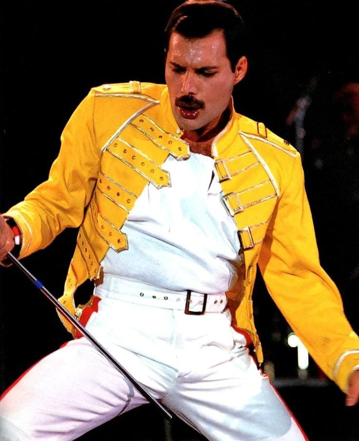

Freddie Mercury (nacido Farrokh Bulsara ; 5 de septiembre de 1946 – 24 de noviembre de 1991) fue un cantante y compositor británico que alcanzó fama mundial como vocalista principal y pianista de la banda de rock Queen .
Considerado uno de los mejores cantantes de la historia del rock, es conocido por su extravagante presencia escénica y su rango vocal de cuatro octavas . Mercury desafió las convenciones del líder de una banda de rock con su estilo teatral, influyendo en la dirección artística de Queen.
Mercury escribió numerosos éxitos para Queen, entre ellos " Killer Queen ", " Bohemian Rhapsody ", " Somebody to Love ", " We Are the Champions ", " Don't Stop Me Now " y " Crazy Little Thing Called Love ". Sus carismáticas actuaciones en directo a menudo lo llevaban a interactuar con el público, como se pudo apreciar en el concierto Live Aid de 1985.
murió el 24 de noviembre de 1991, a los 45 años, debido a unaBronconeumonía complicada por el SIDA . Falleció en su hogar en Kensington, Londres, apenas un día después de confirmar públicamente que padecía la enfermedad, con la que convivía desde su diagnóstico en 1987.